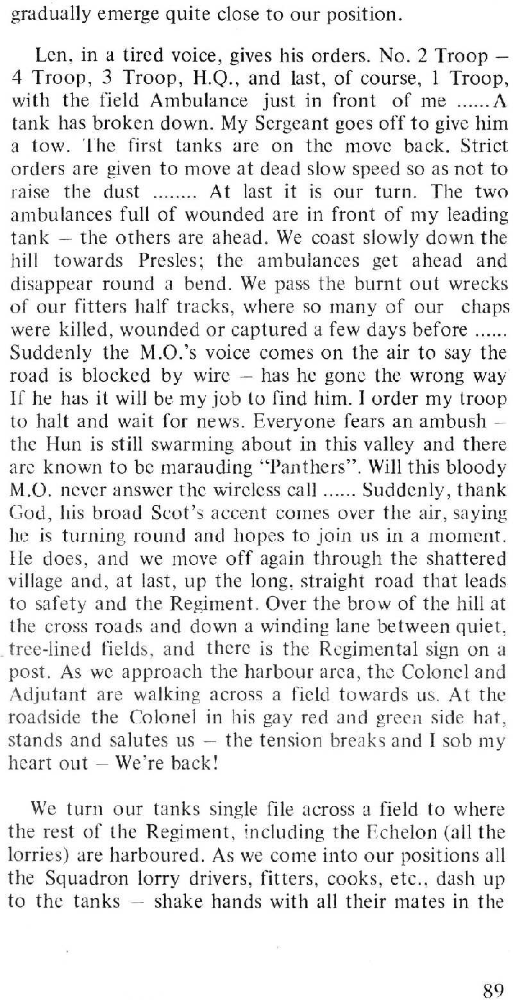

You are here:
Home
>
The Battle: a Tank Officer Remembers
> Page 89
< Prev
Next >

Notes
The "burnt out wrecks" were the remnants of an
ambush on a Fitter's convoy
heading for the ridge on
4 Aug
. Strangely, Geoff makes no mention of this on the day in question.
Men
'Len' Hagger
Places
Presles
< Prev
Next >